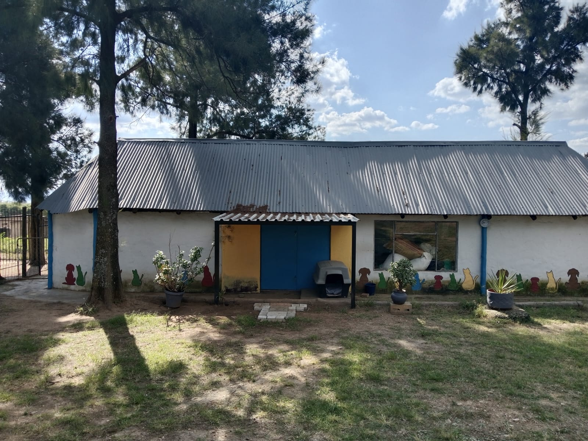

Who We Are
Founded in 2016, Pawsitive Animal Shelter is a registered Non-Profit Organisation (NPO 123-456-NPO) and Public Benefit Organisation (PBO 930012345) committed to animal welfare and community education. Our farm-based sanctuary provides a safe haven for up to 50 dogs at any given time. Each animal receives individualized care, medical attention, and behavioral rehabilitation to prepare them for their forever homes. We operate with complete transparency, ensuring every donation and resource is used responsibly to maximize our impact on animal welfare in our community.
Located on a peaceful farm, our shelter provides a safe environment where every dog receives proper nutrition, veterinary care, daily exercise and plenty of love. Our dedicated volunteers work tirelessly to ensure each animal is physically and emotionally ready for adoption.

What We Do
Rescue & Rehabilitation
We rescue dogs from difficult situations, providing immediate medical care, nutritious food, and a safe environment for recovery. Our team works tirelessly to rehabilitate traumatized animals.
Shelter & Care
Our modern farm facility houses up to 50 dogs with spacious indoor kennels, outdoor play areas, and professional veterinary care. Every dog receives daily exercise, socialization, and enrichment activities.
Adoption Services
We carefully match dogs with suitable families through our comprehensive adoption process. Post-adoption support ensures successful transitions and lifelong placements.
Community Outreach Programs
School Education Programs
We visit local schools to educate children about responsible pet ownership, animal welfare, and compassion. Our interactive sessions teach kids how to safely interact with dogs and understand their needs.
Community Vaccination Drives
Free or low-cost vaccination clinics in underserved communities help prevent disease and promote pet health. We partner with local veterinarians to make essential care accessible to all.
Spay & Neuter Initiative
Our subsidized sterilization program helps control pet overpopulation and reduce the number of unwanted animals in our community. We've sterilized over 300 animals to date.
Foster Care Network
Our foster program provides temporary homes for dogs needing extra care or puppies too young for adoption. Foster families play a crucial role in socialization and rehabilitation.
Adoption Information
Our adoption process ensures the best match between dogs and their new families. Here's what to expect:
Browse Available Dogs
Visit our "Meet Our Dogs" page or come to the shelter to see which dogs are available for adoption. Our staff can help you find a dog that matches your lifestyle.
Complete Application
Fill out our adoption application form. We ask about your living situation, experience with dogs, and what you're looking for in a companion to help us make the best match.
Meet & Greet
Schedule a meeting with your chosen dog. Bring family members and any existing pets for a compatibility check. Multiple visits are encouraged.
Home Visit & Approval
A member of our team will conduct a home visit to ensure your property is safe and suitable. This is also a great time to ask questions about care and training.
Adoption Day!
Complete the adoption contract and pay the adoption fee (R800-R1,500 depending on age). All dogs are vaccinated, sterilized, dewormed, and microchipped before adoption.
Adoption Fee Includes:
- Sterilization surgery
- All vaccinations up to date
- Microchip and registration
- Deworming and flea treatment
- Starter pack (food, collar, leash)
Meet Our Committee
Our dedicated team combines expertise in veterinary care, non-profit management, and community outreach to ensure the best outcomes for our animals.

Sarah Johnson
Chairperson
Sarah has over 10 years of experience in animal rescue and is passionate about finding loving homes for every dog.
sarah@pawsitive.co.za
+27 82 123 4567
Sarah Johnson
Chairperson
Sarah has over 10 years of experience in animal rescue and is passionate about finding loving homes for every dog.
sarah@pawsitive.co.za
+27 82 123 4567
Sarah Johnson
Chairperson
Sarah has over 10 years of experience in animal rescue and is passionate about finding loving homes for every dog.
sarah@pawsitive.co.za
+27 82 123 4567
Sarah Johnson
Chairperson
Sarah has over 10 years of experience in animal rescue and is passionate about finding loving homes for every dog.
sarah@pawsitive.co.za
+27 82 123 4567
Our Facilities
Our shelter provides a safe, comfortable environment where every rescued animal receives the care and attention they deserve.

Main Shelter Building

Indoor Kennels

Farm Grounds
Official Documentation
We operate with full transparency and accountability. View our official registration documents and certifications below.
Visit Our Shelter
Pawsitive Animal Shelter
Plot 143 Pretorius street Laezonia, Centurion, Gauteng, 0026
Visiting Hours:
Tuesday - Saturday:
9:00 AM - 5:00 PM
Sunday:
10:00 AM - 3:00 PM
(By appointment)